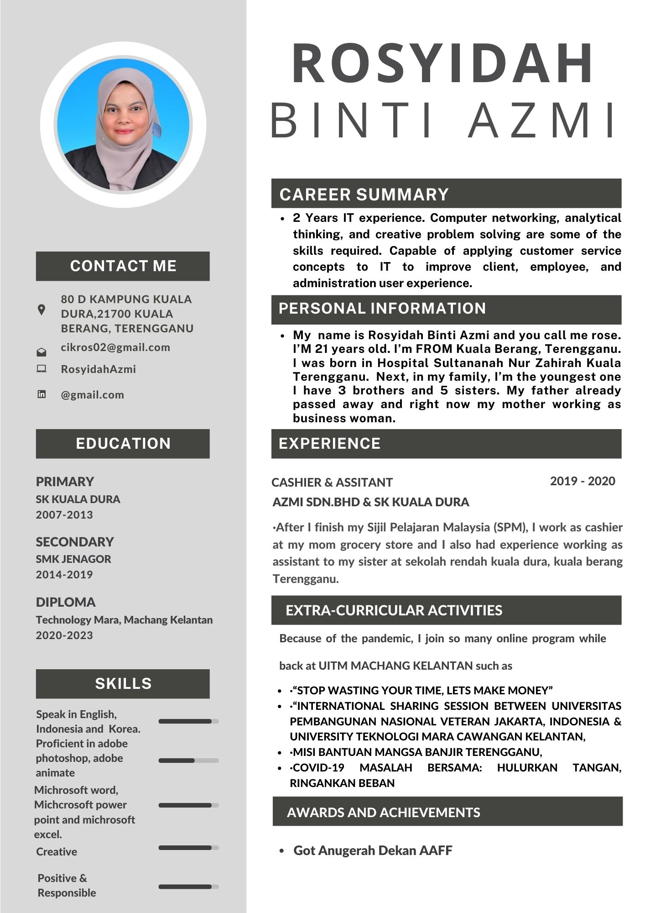

| HOMEPAGE | BIODATA | EXPERIENCE | EDUCATION | FAMILY | GALLERY | CONTACT |
|---|
This is my resume that tells about my background and also my experience:

I consider myself to be a person who views life positively in all respects. I prefer to take on challenges and think it's important to accept both success and failure in a balanced approach in order to go forward. I regard my attitude to be my greatest strength. As I believe in my abilities and my work, I want to make it clear that I don't leave any questions unanswered. My immediate objective is to establish a platform that will allow me to advance my career and advance the company. The prosperity of the organisation is my long-term objective as well. I constantly push myself to advance and continue to evolve, as a result. enjoy doing, experiencing, and observing. I enjoy writing as well as reading, thus My immediate objective is to establish a platform that will allow me to advance my career and advance the company. The prosperity of the organisation is my long-term objective as well. I constantly push myself to advance and continue to evolve, as a result. enjoy doing, experiencing, and observing. I enjoy writing as well as reading.